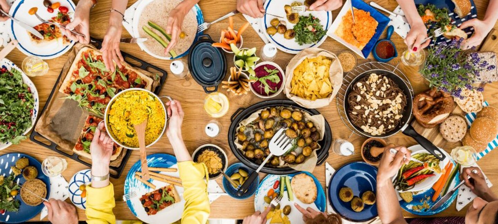

Odin Recipes

These are just a few of my favorite dishes that I love to make and savor.
I hope you enjoy exploring these recipes as much as I do and find joy in cooking them. May your kitchen be filled with delightful aromas and delicious moments.
Enjoy the journey and happy cooking!